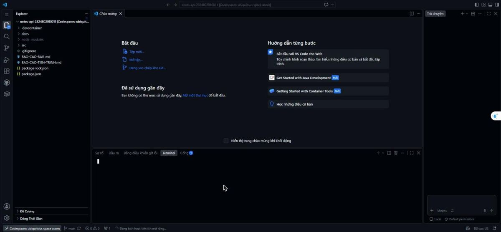
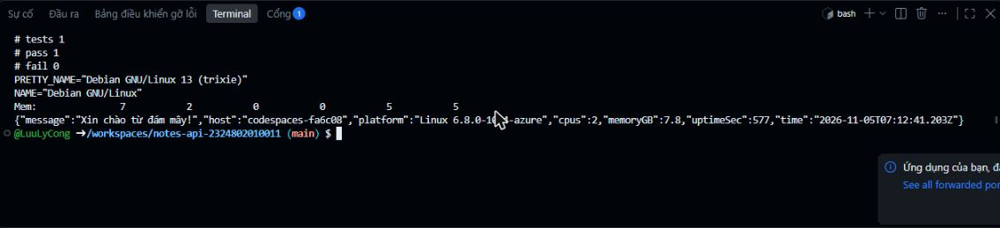
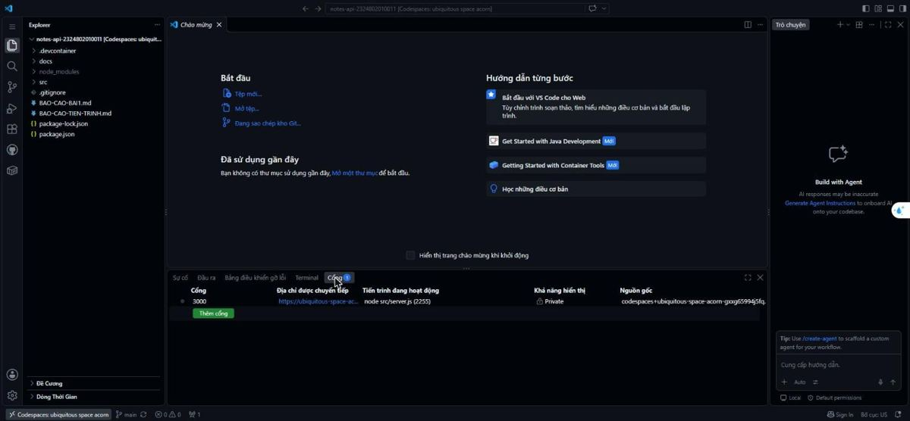
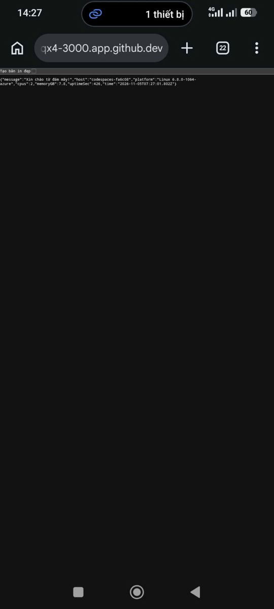
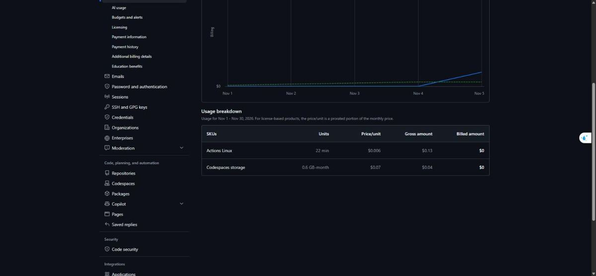
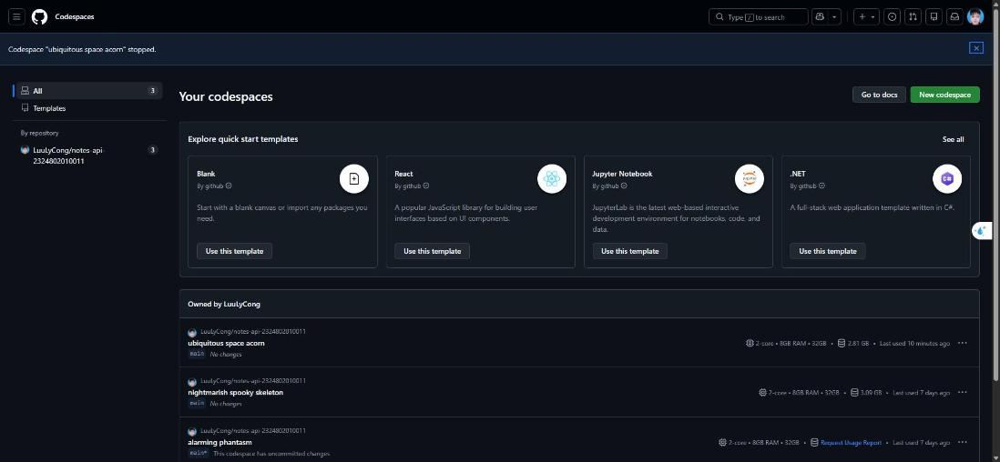

TDMU Notes API - Bài 1: Đặc tính điện toán đám mây NIST
Thực hành Điện toán đám mây (LING270) · Sinh viên: Lưu Lý Công
5 đặc tính thiết yếu theo NIST
| Đặc tính | Định nghĩa ngắn | Bằng chứng từ bài lab |
|---|---|---|
| Tự phục vụ theo nhu cầu | Người dùng tự xin tài nguyên tính toán khi cần, không phải nhờ ai cấp phát thủ công. | Tạo repo notes-api-2324802010011 từ template của lớp, rồi tự bấm mở một Codespace trên GitHub. Máy ảo có 2 vCPU và khoảng 8 GB RAM được cấp ngay, không phải gửi yêu cầu cho quản trị viên. |
| Truy cập mạng rộng | Dịch vụ dùng được qua mạng bằng các thiết bị và giao thức chuẩn (trình duyệt, HTTP). | Codespace mở được ngay trong trình duyệt hoặc VS Code. API chạy ở cổng 3000 và được chuyển tiếp ra URL HTTPS dạng *-3000.app.github.dev. Trang này phục vụ qua GitHub Pages. |
| Gộp tài nguyên | Nhà cung cấp gom tài nguyên vật lý thành một khối, rồi chia động cho nhiều người dùng. | API trả về hostname codespaces-0375bf (codespace hiện tại; số đo lấy từ codespace trước có hostname khác), và nhân Linux là 6.8.0-1064-azure. Codespace chạy trên hạ tầng Azure dùng chung, và người dùng không biết máy chủ vật lý nằm ở đâu. |
| Co giãn nhanh | Tài nguyên tăng hoặc giảm nhanh theo nhu cầu, trông như vô hạn với người dùng. | Codespace được tạo và dừng theo nhu cầu. Có thể đổi loại máy (số core) hoặc xóa đi tạo lại mà không phải mua phần cứng. Cài thêm Node 22 và gói express chỉ mất vài giây. |
| Đo lường được | Mức sử dụng tài nguyên được đo, theo dõi và tính phí minh bạch. | GitHub tính Codespaces theo core-giờ (gói miễn phí là 120 core-giờ/tháng). Endpoint /health trả về uptime_seconds, và thời gian phản hồi của API đã được đo bằng curl (xem mục Số liệu). |
Số liệu
Đo 10 lần bằng lệnh curl -s -o /dev/null -w "%{time_total}\n" http://localhost:3000/hello, chạy ngay trong Codespace ngày 29/10/2026.
| Lần | time_total (s) |
|---|---|
| 1 | 0.001298 |
| 2 | 0.001011 |
| 3 | 0.001049 |
| 4 | 0.001043 |
| 5 | 0.000814 |
| 6 | 0.001629 |
| 7 | 0.002236 |
| 8 | 0.000753 |
| 9 | 0.001811 |
| 10 | 0.000741 |
| Trung bình | 0.001 |
Đây là thời gian đo qua localhost, tức là bên trong máy Codespace, nên không tính độ trễ Internet. Nếu gọi qua URL công khai thì số đo sẽ lớn hơn.
API
URL API: https://nightmarish-spooky-skeleton-v6jg54v6564wf66w-3000.app.github.dev
GET /: lời chào và tên dịch vụGET /health: trạng thái và thời gian server đã chạy (giây)GET /hello: lời chào, hostname và thời gian hiện tại
URL này có thể đổi nếu Codespace được tạo lại, và chỉ truy cập được khi Codespace đang chạy, server đã được bật bằng npm start, và cổng 3000 trong tab PORTS đang để chế độ Public.
So sánh: máy cá nhân và Codespace
| Tiêu chí | Máy cá nhân | Codespace |
|---|---|---|
Thời gian từ lúc bắt đầu đến khi chạy được node -v |
Node đã được cài sẵn từ trước nên node -v chạy ngay (v20.17.0). Thời gian cài mới từ đầu không được đo trong bài này. |
Mốc thời gian (giờ Việt Nam, ngày 05/11/2026): bấm Create codespace lúc 14:07:08; terminal hiện ra lúc 14:11:16 (khoảng 4 phút 8 giây); terminal nhận lệnh và chạy được node -v lúc 14:12:21 (khoảng 5 phút 13 giây), cho kết quả v22.23.4. Đây là lần dựng đầu nên lâu, vì phải build image có Java và Docker. |
| Số CPU, RAM (từ API) | Intel Core i5-11400H, 12 luồng, 15,7 GB RAM (đọc từ thông tin hệ thống của máy). | cpus: 2, memoryGB: 7.8 (kết quả GET /, host codespaces-fa6c08). |
| Hệ điều hành | Windows 11 Home Single Language, bản 10.0.22631. | Debian GNU/Linux 13 (trixie), nhân Linux 6.8.0-1064-azure (container chạy trên máy ảo Azure). |
| Cách truy cập từ thiết bị khác | Phải cùng mạng LAN, biết IP nội bộ, mở cổng trên tường lửa; muốn ra Internet phải cấu hình router hoặc dùng tunnel. | Cổng 3000 được chuyển tiếp thành URL HTTPS dạng https://<tên>-3000.app.github.dev. Mặc định là Private; đã đổi sang Public, truy cập từ bên ngoài không cần đăng nhập (HTTP 200), rồi đặt lại Private (người ngoài bị chuyển tới trang đăng nhập, HTTP 302). |
| Chi phí, đo bằng gì | Điện năng và khấu hao máy; không có công cụ đo sẵn trong bài. | Settings, Billing, Usage (ngày 05/11/2026): Codespaces storage 0,6 GB-tháng, gross $0,04, billed $0; Actions Linux 22 phút, gross $0,13, billed $0. Số core-giờ tính toán của codespace chưa hiện lúc chụp vì dữ liệu billing cập nhật chậm; ước tính codespace chạy khoảng 10 phút với 2 core, tức khoảng 0,3 core-giờ, nằm trong hạn mức miễn phí 120 core-giờ mỗi tháng. |
Minh chứng bằng ảnh chụp
Ảnh chụp màn hình các bước thực hiện ngày 05/11/2026. Bấm vào ảnh để xem cỡ lớn.













